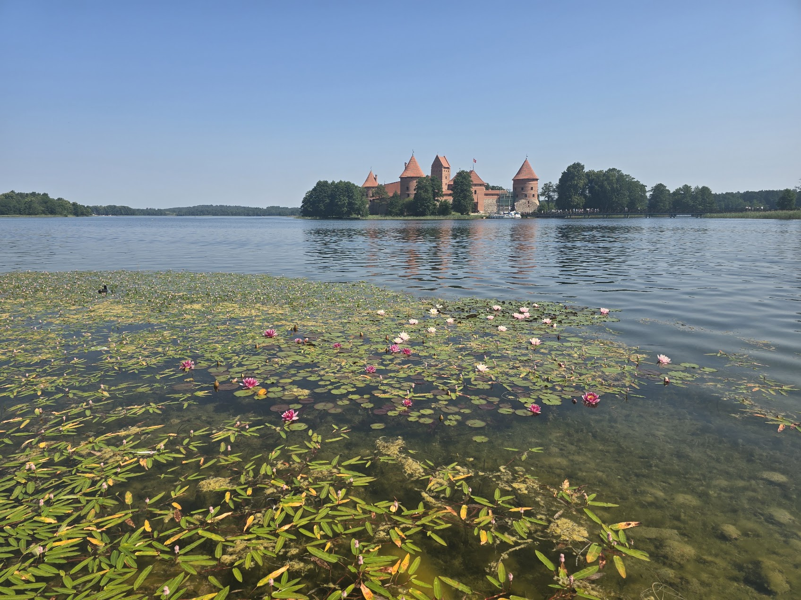
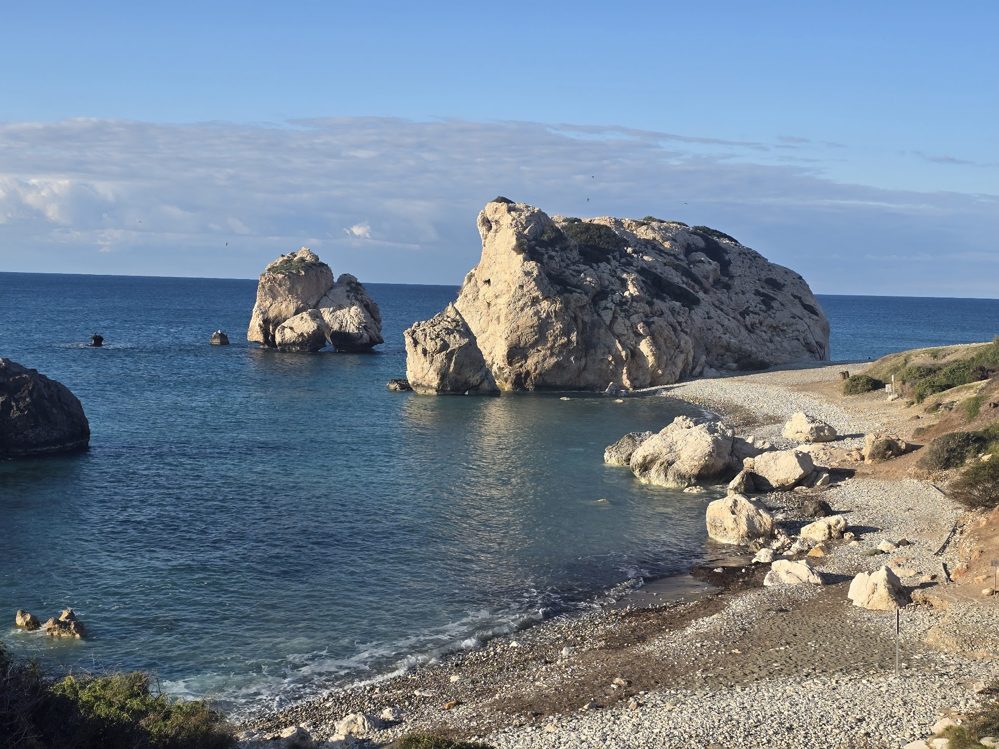
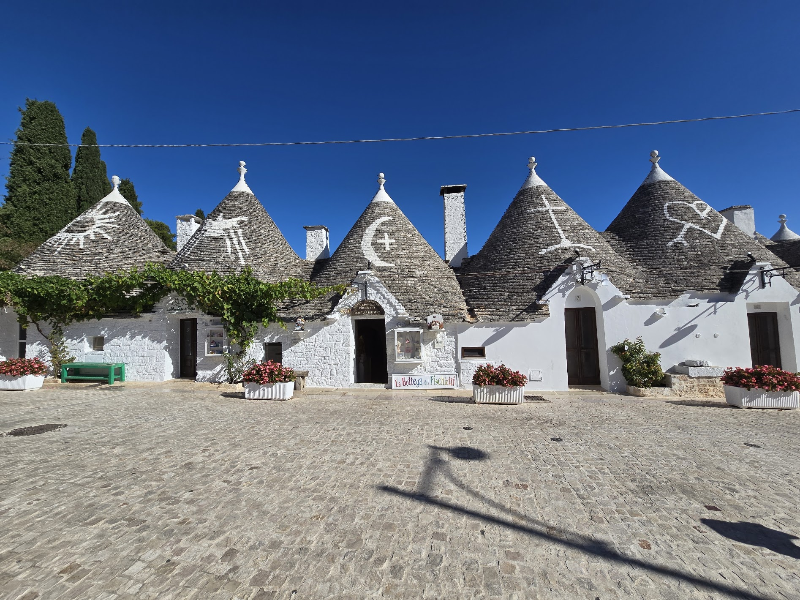
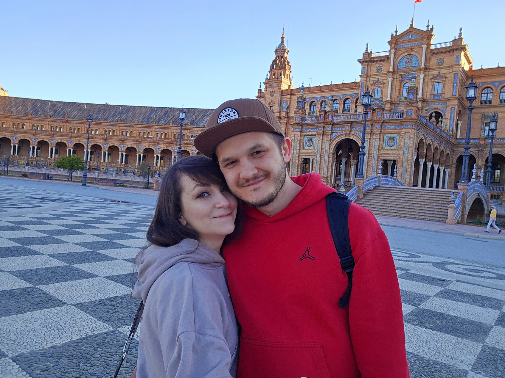
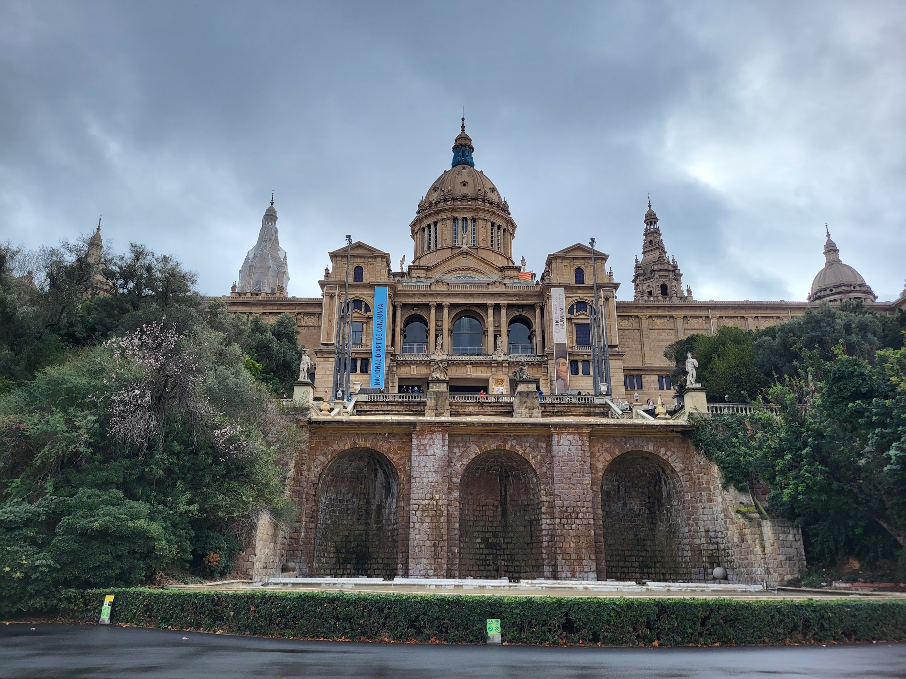
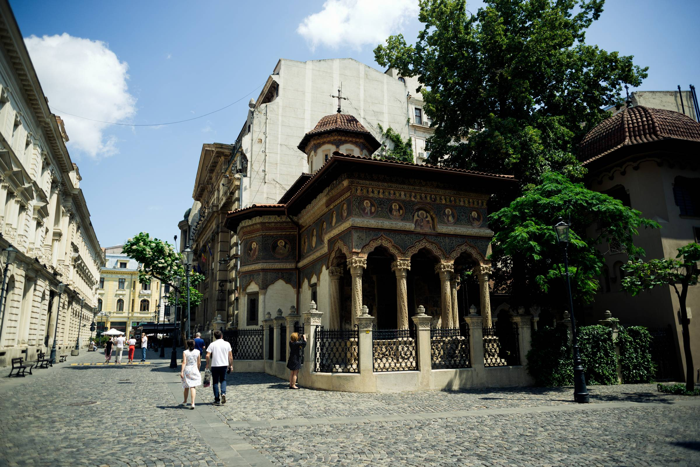
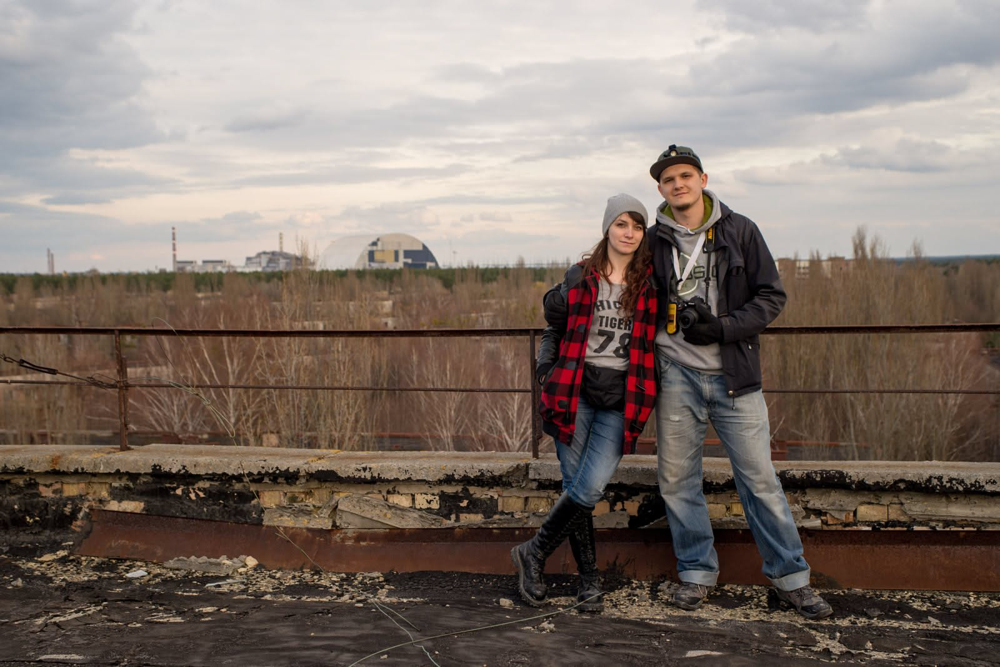

2026
Podlasie, Litwa, Warmia i Mazury
Początek wakacji w pięknych zakątkach Polski i nie tylko.

Blog podróżniczy
Relacje, trasy i praktyczne notatki z miejsc, które najlepiej poznaje się przez widoki, jedzenie, postoje, zachwyty i spotkanych ludzi.
Miejsce dla naszych historii
Lubimy planować, odkrywać i wyciskać z każdej podróży maksimum, ale wiemy też, że najpiękniejsze chwile często czekają tam, gdzie się ich nie spodziewamy. Szukamy lokalnych smaków, niezwykłych widoków i ludzi, którzy sprawiają, że dane miejsce zostaje z nami na długo.

Początek wakacji w pięknych zakątkach Polski i nie tylko.

Od Larnaki i Nikozji po Troodos, Akamas i Pafos.

Road trip przez Apulię, Kampanię i Basilicatę.

Weekend w stolicy Andaluzji.

Intensywne zwiedzanie pełne kolorów i architektury.

Poznań, Zielona Góra, Zamek Czocha, Jelenia Góra i Wrocław.
Od średniowiecznych miast po klify, naturalne zatoki i widoki, które trudno zapomnieć.

Chorwacja, Bośnia i Hercegowina, Czarnogóra, Albania, Grecja i Macedonia Północna.

Miasto świateł, wzgórz, tramwajów i długich spacerów.

Klasyka na własnych zasadach: historia, jedzenie i ukryte skarby.

Jeziora, miasta, trasy i widoki, od których ciężko oderwać wzrok.

Wycieczka przez parki, miasta i przestrzenie, które trudno zmieścić w jednym kadrze.

Bałkański roadtrip – Bułgaria, Rumunia, Serbia i Węgry.

Pięć dni między czeskimi miastami i bawarskimi zamkami.

Strefa wykluczenia wokół Czarnobylskiej Elektrowni Atomowej i zabytki Kijowa.
Tu byliśmy